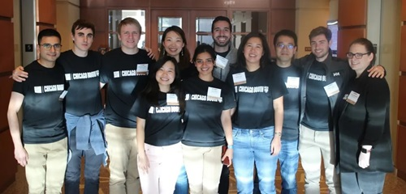
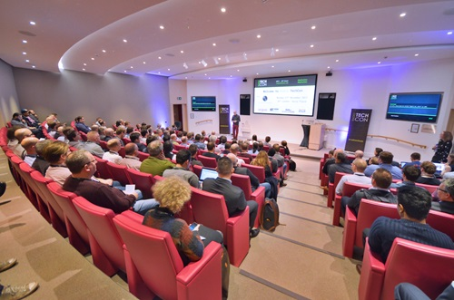

Your gateway to the latest in technology and innovation.
History
TechCon began in 2010 as a small gathering of technology enthusiasts eager to share ideas and innovations. Over the years, it has grown into a premier annual event, attracting industry leaders, startups, and tech professionals from around the world. Each year, TechCon has introduced new themes and expanded its reach, reflecting the rapid evolution of the technology landscape.

The inaugural TechCon event in 2010.

TechCon's growth over the years, drawing larger audiences and exhibitors.
Mission
Our mission is to foster innovation, collaboration, and learning within the technology community. TechCon 2024 aims to inspire attendees to push the boundaries of what is possible, connect with industry leaders, and empower the next generation of tech pioneers.
Innovation at the heart of TechCon.Collaboration drives progress.
Past Speakers
Alex Johnson
AI researcher and CTO at FutureTech, Alex pioneered advancements in natural language processing and has published over 50 papers on machine learning.
Maya Chen
Renowned cybersecurity expert, Maya has led global initiatives on data privacy and was instrumental in developing open-source security tools used worldwide.
Roberto Garcia
Roberto is a leading innovator in the Internet of Things, credited with launching several smart city projects that have transformed urban living.